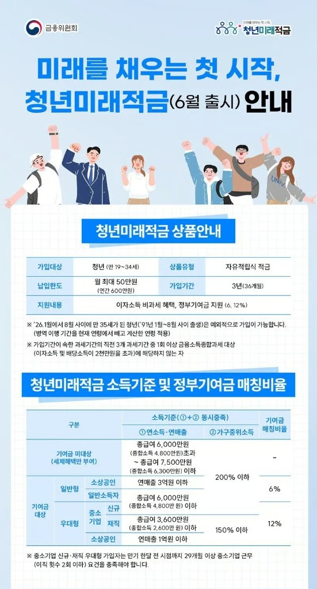
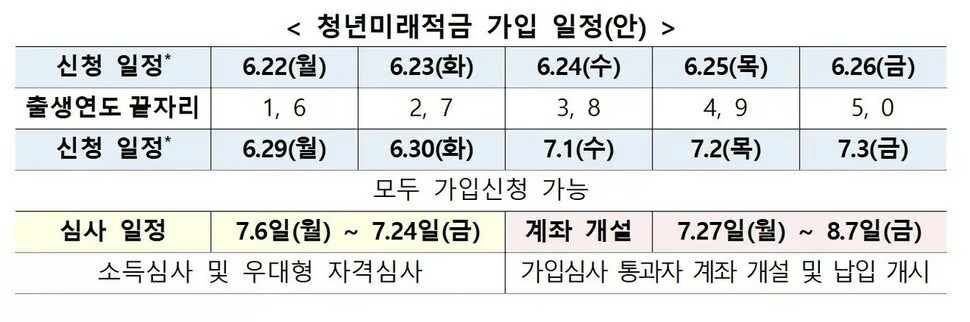

청년미래적금 완벽정리: 6월 22일 출시! 놓치면 진짜 후회하는 이유
월 50만원 × 3년 = 최대 2,227만원 (연 19.4% 적금 효과!)

안녕하세요, 승박이형입니다. 평범한 직장인의 두 번째 월급 만들기 프로젝트, 오늘은 무조건 챙겨야 하는 정책상품 하나 소개합니다.
바로 2026년 6월 22일(월) 출시되는 청년미래적금입니다. 청년도약계좌가 작년 12월 종료되고, 그 후속으로 나오는 정부 지원 적금이에요.
솔직히 말해서 이거 안 하면 손해입니다. 일반 시중은행 적금 금리가 3~4%인 시대에, 실질 금리 13~19%짜리 적금이 나왔거든요. 정부가 돈을 얹어주고 세금까지 면제해주니까 가능한 거죠.
자, 6월 22일이 코앞이니까 빠르게 핵심만 정리할게요.
🎯 청년미래적금이 뭔데?
쉽게 말하면 정부가 도와주는 청년 적금입니다. 매달 50만원씩 3년 동안 부으면, 정부가 일정 비율을 더 얹어주고 이자에 세금도 안 떼는 상품이에요.
| 항목 | 내용 |
|---|---|
| 납입 한도 | 월 최대 50만원 (연 600만원) |
| 가입 기간 | 3년 (36개월) |
| 기본 금리 | 연 5% (고정, 전 은행 동일) |
| 우대 금리 | 최대 2~3% (은행별 상이) |
| 최대 금리 | 연 7~8% |
| 정부 기여금 | 일반형 6% / 우대형 12% |
| 세제 혜택 | 이자소득 비과세 |
| 실질 효과 | 연 13.2~19.4% 적금과 동일 |
원금 1,800만원(50만원 × 36개월)을 넣으면, 만기에 일반형은 약 2,110만원, 우대형은 약 2,227만원을 받게 됩니다. 단순 계산으로 일반형은 300만원, 우대형은 400만원 넘게 버는 셈이죠.
👤 누가 가입할 수 있어?
가입 조건은 크게 나이 + 소득 + 가구소득 3가지를 다 만족해야 합니다.
1) 나이 조건
만 19세 ~ 34세 청년 (2026년 기준 1991년생 ~ 2007년생)
병역 이행자는 최대 6년까지 연령 계산에서 빼줍니다. 예를 들어 현재 36세인데 군대 2년 다녀왔다면, 34세로 간주해서 가입 가능해요.
❗ 1991년 1월~8월 7일생 주목: 이번 최초 가입기간(8월 7일까지)에만 예외적으로 가입 가능합니다. 이 기간 놓치면 영영 못 들어가요.
2) 개인 소득 조건
- 총급여 7,500만원 이하 (직장인)
- 또는 종합소득 6,300만원 이하
3) 가구 소득 조건
- 가구 중위소득 200% 이하
4) 일반형 vs 우대형 자동 분류
가입할 때는 일반형/우대형 구분 없이 그냥 신청하면 됩니다. 소득 심사 후 자동으로 분류돼요.
- 우대형(기여금 12%): 개인소득 3,600만원 이하 OR 중소기업 재직자/신규 취업자 OR 일정 요건 충족 소상공인
- 일반형(기여금 6%): 그 외 가입 대상자
💡 중소기업 다니는 사회초년생이라면 거의 무조건 우대형 가능성 큽니다.
❌ 가입 제한
- 직전 3개년 중 1회 이상 금융소득 종합과세 대상자는 가입 불가
- 청년도약계좌를 만기 5년 채운 사람은 가입 불가
📅 6월 22일~26일 5부제 일정 (출생연도 끝자리 기준)
가입 신청 첫 주는 5부제로 운영됩니다. 출생연도 끝자리에 따라 신청일이 정해져 있어요.

| 날짜 | 요일 | 출생연도 끝자리 |
|---|---|---|
| 6월 22일 | 월 | 1, 6 (1991, 1996, 2001, 2006) |
| 6월 23일 | 화 | 2, 7 (1992, 1997, 2002, 2007) |
| 6월 24일 | 수 | 3, 8 (1993, 1998, 2003) |
| 6월 25일 | 목 | 4, 9 (1994, 1999, 2004) |
| 6월 26일 | 금 | 5, 0 (1995, 2000, 2005) |
| 6월 29일 ~ 7월 3일 | 월~금 | 모두 신청 가능 |
📌 중요 일정
- 가입 신청: 6월 22일(월) ~ 7월 3일(금)
- 계좌 개설: 7월 27일(월) ~ 8월 7일(금)
선착순 아닙니다. 가입 요건만 충족하면 누구나 가입 가능해요. 다만 정부 기여금 예산을 초과할 경우 개인소득이 낮은 순서로 우선 선정됩니다.
🏦 어느 은행에서 가입할까?
청년미래적금 취급기관은 총 15곳입니다.
기업, 농협, 신한, 우리, 하나, 국민, iM, 부산, 경남, 광주, 전북, 수협, 카카오, 우정사업본부 (토스뱅크는 12월부터)
기본금리 5%는 모든 은행 동일. 차이는 우대금리(최대 2~3%)에서 발생합니다.
공통 우대금리 조건은 대개 이런 식입니다.
- 총급여 일정액 이하 시 우대
- 첫 거래 고객 우대
- 자동이체 / 카드 사용 / 급여이체 조건
💡 선택 팁
- 이미 주거래 은행이 있고 자동이체·카드 쓰고 있으면 거기서 가는 게 우대금리 챙기기 쉬워요
- 갈아타기 하는 분은 하나은행 별도 갈아타기 우대금리 체크
- 비대면 가입이라 발품 안 팔아도 되니까 각 은행 앱에서 우대조건 꼭 비교
⚠️ 가입 직전에 은행연합회 소비자포털에서 최종 비교하세요.
🔄 청년도약계좌에서 갈아타기, 해야 할까?
갈아타기 절차 (반드시 이 순서!)
- 청년미래적금 가입 신청 + 심사 완료 (6/22~7/3)
- 가입 가능 통보 받기
- 서민금융진흥원 안내에 따라 청년미래적금 계좌 개설 (7/27~8/7)
- 그 다음에 청년도약계좌 "특별중도해지" 신청
⚠️ 순서 절대 바꾸면 안 됨! 청년도약계좌 먼저 해지하면 일반 중도해지가 돼서 정부기여금 못 받고 비과세 혜택도 날아갑니다.
갈아타기, 이런 사람은 GO!
- 청년도약계좌 가입한 지 얼마 안 됐다 (1~2년차)
- 5년 유지가 부담스럽다
- 우대형(중소기업 재직자, 소득 3,600만원 이하) 대상자다
갈아타기, 이런 사람은 STAY!
- 청년도약계좌 이미 3년 이상 유지했다
- 5년 만기까지 충분히 부을 여력 있다
- 청년도약계좌 정부기여금을 이미 많이 받았다
💡 판단 기준: 남은 납입 기간이 3년보다 적으면 그대로 유지, 3년보다 많이 남았으면 갈아타기 검토.
❗ 청년도약계좌 ↔ 청년미래적금 갈아타기는 이번 최초 가입기간(6/22~8/7)에만 가능합니다. 다음 모집 때는 갈아타기 불가능해요. 진짜 마지막 기회.
⚠️ 가입 전 꼭 체크할 주의사항 5가지
- 비과세 또는 군장병급여 증빙 대상자는 7월 1일 전까지 가입 신청 필수 — 육아휴직급여, 군장병급여 받는 분 등은 마감일에서 2영업일 전(7월 1일)까지 신청.
- 일반 중도해지는 손해 막심 — 정부기여금 못 받고 비과세 혜택도 사라집니다.
- 소상공인은 사전 서류 발급 필요 — 운영 중인 모든 사업장의 '소상공인확인서'를 가입 신청 전에 미리 발급.
- 1991년생, 이번이 마지막 기회 — 1991년 8월 8일 ~ 12월 31일생은 다음 2차 가입(12월) 때 만 35세 초과로 가입 불가.
- 청년도약계좌 5년 만기 다 채운 사람은 가입 불가
💡 승박이형의 솔직한 한마디
저는 직장인이고 부동산 공부하면서 이런 정책 상품들도 항상 관심 있게 봐왔는데요, 청년미래적금은 진짜 안 하면 손해입니다.
- 확정 수익: 적금이라 원금 손실 위험 0
- 실질 금리 13~19%: 시중 어떤 적금/예금도 못 따라옴
- 3년 만기: 청년도약계좌(5년)보다 짧아서 부담 적음
- 정부 보장: 정부 정책 상품이라 안전성 최상
월 50만원이 부담스러우면 자유적립식이라 적게 넣어도 됩니다. 단, 정부 기여금은 납입액에 비례하니까 가능하면 한도 채우는 게 이득이에요. 3년 뒤 400만원 보너스라고 생각하세요.
🚀 다음 액션
- ✅ 본인 출생연도 끝자리 확인 → 5부제 신청일 체크
- ✅ 주거래 은행 앱 깔고 우대금리 조건 미리 확인
- ✅ 청년도약계좌 가입자라면 갈아타기 손익 계산
- ✅ 6월 22일(월) 오전 9시, 해당 은행 앱에서 신청 시작!
이 글은 2026년 6월 기준 정보로 작성되었으며, 실제 가입 시 금융위원회·서민금융진흥원 공식 안내를 다시 확인하시기 바랍니다. 본 글은 일반 정보 제공 목적이며 투자 권유가 아닙니다.